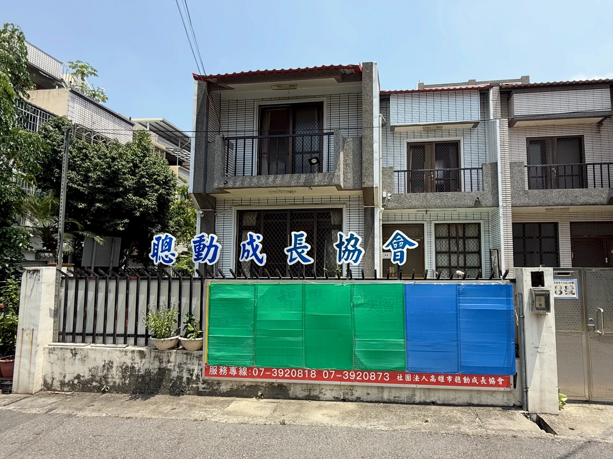

.png)
Informations de référence importantes et ressources d’éducation à la santé :
【Éducation à la santé】Exercice et activité physique dans la maladie de Parkinson : passé, présent et avenir. Source : Société internationale de la maladie de Parkinson et des troubles du mouvement Cliquer pour consulter
【Rediffusion disponible】2026/04/11 Conférence médicale de la Journée mondiale de la maladie de Parkinson ~Bougez et réinventez l’avenir de la maladie de Parkinson Voir la rediffusion
【Éducation à la santé】Ressources pour l’activité physique à Kaohsiung en 2026 — du point de vue de la médecine du sport et des personnes atteintes de la maladie de Parkinson Cliquer pour consulter
【Ressources de référence en ligne】Fluctuations de la réponse aux médicaments dans la maladie de Parkinson Cliquer ici et le questionnaire WOQ9 Cliquer ici
【Ressources de référence en ligne】(stade H&Y 2 ou inférieur) Commencer le renforcement musculaire Cliquer pour consulter Exercices des membres supérieurs avec bande élastique en boucle Cliquer ici Exercices des membres inférieurs Cliquer ici (Veillez à votre sécurité)
Activités et annonces de l’année 115 du calendrier de la République de Chine :
【Conférence médicale】115/04/11 (sam.) 08:40-11:45 — calendrier de la République de Chine【Sur place + Diffusion en direct】Voir la rediffusion
Conférence médicale de la Journée mondiale de la maladie de Parkinson ~Bougez et réinventez l’avenir de la maladie de Parkinson~ Voir la rediffusion
[Reporté] 115/04/21 ~06/02 Cours d’initiation à la pleine conscience en petit groupe pour les patients de SmartAction Informations complémentaires
[Reporté] 115/06~08 (juin à août, calendrier de la République de Chine) : cours d’initiation à l’activité physique en petit groupe pour les patients de SmartAction
Prochaines conférences médicales
[Reporté provisoirement]【Conférence médicale】115/05/23 (sam., calendrier de la République de Chine) : café et maladie de Parkinson
[Reporté provisoirement]【Conférence médicale】115/06/27 (sam.) 10:00-11:00 — calendrier de la République de Chine : troubles de la marche et de l’équilibre et maladie de Parkinson
[Reporté provisoirement]【Conférence médicale】115/08/22 (sam., calendrier de la République de Chine) : sommeil dans la maladie de Parkinson et la démence d’AlzheimerActualités ↓↓↓ (Articles du blog)
Activités et temps forts de l’année 114 du calendrier de la République de Chine
114/11/25 (mar.) 14:00~16:00 — calendrier de la République de Chine (conférence gratuite) : comportements difficiles dans la démence et stratégies pour y faire face au quotidien
114/11/18 (mar.) 14:00~16:00 — calendrier de la République de Chine (conférence gratuite) : adoptez ces habitudes alimentaires pour prévenir le vieillissement
114/10/14 (mar.) 14:30-16:00 — calendrier de la République de Chine (conférence gratuite)S’endormir grâce aux arômes : fabriquer un spray relaxant aux huiles essentielles pour le sommeil S’inscrire à l’activité
114/09/20 (sam.) 09:30-11:30 — calendrier de la République de Chine (conférence gratuite)Musicothérapie dans l’accompagnement de la maladie de Parkinson et de la démence Ⅱ S’inscrire à l’activité
114/09/02 (mar.) 14:30-16:00 — calendrier de la République de Chine (conférence gratuite) : un quotidien parfumé dans le quartier — fabriquer un baume polyvalent aux huiles essentielles
114/08/26 (mar.) 14:30-16:00 — calendrier de la République de Chine (conférence gratuite) : utilisations relaxantes des huiles essentielles adaptées aux personnes atteintes de la maladie de Parkinson
114/08/23 (sam.) 09:30-11:30 — calendrier de la République de Chine (conférence gratuite) : troubles du sommeil chez les personnes atteintes de la maladie de Parkinson
114/08/19 (mar.) 14:00~16:00 — calendrier de la République de Chine (conférence gratuite) : établir une relation de soins sûre et fondée sur la confiance — l’art d’interagir avec les personnes atteintes de démence
114/08/09 (sam.) 09:30-11:30 — calendrier de la République de Chine (conférence gratuite) : symptômes psychiatriques de la maladie de Parkinson et leur prise en charge
114/07/22 (mar.) 14:30-16:00 — calendrier de la République de Chine (conférence gratuite) Un voyage parmi les huiles essentielles pour détendre les membres et apaiser l’esprit
114/07/05 (sam.) 09:30-11:30 — calendrier de la République de Chine (conférence gratuite) Conseils nutritionnels pour les personnes atteintes de la maladie de Parkinson et prévention de la sarcopénieTemps forts de l’activité
114/07/01 (mar.) 09:00-11:00 — calendrier de la République de Chine (activité du centre communautaire) La récolte de la ferme joyeuse du centre communautaire est arrivée !Temps forts de l’activité
Activité reprogrammée (mar.) 14:30-16:00 (conférence gratuite)La protection par les huiles essentielles : fabriquer un spray antimoustiques naturel
114/06/18 (mer.) — calendrier de la République de Chine 09:30-11:30 (fête d’anniversaire) Fête des anniversaires de juin pour les aînés Temps forts de l’activité
114/06/07 (sam.) 09:30-11:30 — calendrier de la République de Chine (conférence gratuite)Musicothérapie dans l’accompagnement de la maladie de Parkinson et de la démence ⅠTemps forts de l’activité
114/05/29 (jeu.) 09:00-11:00 — calendrier de la République de Chine (activité du centre communautaire)Célébrer la fête des Bateaux-DragonsTemps forts de l’activité
114/05/27 (mar.) 10:00-11:30 — calendrier de la République de Chine (conférence gratuite)Une expérience interactive d’huiles essentielles et de massage dans l’accompagnement de la démence Temps forts de l’activité
114/05/08 (jeu.) 09:30-11:30 — calendrier de la République de Chine (conférence gratuite) Gestes élémentaires de réanimation et soins d’urgence des plaies Temps forts de l’activité
114/04/12 (sam.) 09:00~11:40 — calendrier de la République de Chine (conférence gratuite)Journée mondiale de la maladie de Parkinson de SmartAction : « Entendre la maladie de Parkinson ! »Temps forts de l’activité
114/03/20 (jeu.) 09:00~11:30 — calendrier de la République de Chine (rencontre conviviale des membres)Rencontre chantante des membres de SmartActionTemps forts de l’activité
114/03/15 (sam.) 09:30~11:30 — calendrier de la République de Chine (conférence gratuite) Utilisation actuelle du Shenbo Knife dans le traitement des tremblements et de la maladie de ParkinsonTemps forts de l’activité
114/03/08 (sam.) 08:15~11:30 — calendrier de la République de Chine (rencontre conviviale des membres)Rencontre de marche des membres de SmartAction à WeiwuyingTemps forts de l’activité
114/03/06 (jeu.) 09:00~11:30 — calendrier de la République de Chine (rencontre conviviale des membres) : rencontre chantante des membres de SmartActionTemps forts de l’activité
114/02/15 (sam.) 09:30-11:30 — calendrier de la République de Chine (conférence gratuite)Le point de vue de la kinésithérapie sur l’amélioration de l’équilibre et de l’agilité dans la maladie de Parkinson et la démenceTemps forts de l’activité
À propos
Les objectifs de 【SmartAction】
Aider les personnes atteintes de démence à rester « éveillées » (smart),
et les personnes atteintes de la maladie de Parkinson à rester actives (« action »).
Un lien partagé entre médecins, travailleurs sociaux, patients et familles, né à l’hôpital Chang Gung Memorial de Kaohsiung,
issu des groupes de patients organisés conjointement par le service social de l’hôpital et les neurologues.
Les missions de l’association sont les suivantes :
1. Fournir des informations sur les différents besoins des personnes atteintes de maladies neurodégénératives et de leurs familles, et constituer
un guide des ressources sociales.
2. En tant qu’organisation du troisième secteur (à but non lucratif), rechercher la collaboration avec le premier secteur (secteur public
), et le deuxième secteur (secteur marchand), afin de mettre en commun les ressources liées aux maladies neurodégénératives
ou de créer des alliances stratégiques.
3. Défendre les droits relatifs aux soins, à la vie quotidienne, à la protection sociale, aux politiques publiques et à la législation concernant les maladies neurodégénératives
et les intérêts qui s’y rattachent.
4. Améliorer la connaissance des maladies neurodégénératives au sein du public.
5. Faire évoluer les attitudes et les valeurs sociales par l’éducation du public, afin que les personnes atteintes de maladies neurodégénératives
et leurs familles rencontrent moins d’obstacles matériels et immatériels.
6. Proposer, sous différentes formes, une formation continue sur les maladies neurodégénératives et des recherches connexes.。
7. Organiser pour les membres de l’association diverses rencontres et des échanges intellectuels et émotionnels.
Vidéos
Pour plus de vidéos, cliquez ci-dessous 👇 et abonnez-vous
Chaîne YouTube de l’Association SmartAction
Boutique en ligne
Pour découvrir d’autres créations, rendez-vous sur Boutique en ligne ECPaypour faire vos achats.
Je suis très heureux de partager avec vous mon expérience au sein de
l’organisme d’action sociale de l’Association SmartAction et les résultats que j’y ai obtenus,
et de vous dire que la maladie n’est pas ce qui fait peur ; ce qui fait peur, c’est
de ne pas oser faire ce premier pas essentiel pour sortir de son isolement.
Ma présence ici prouve que j’en suis tout à fait capable.
Que mon expérience vous serve de petit exemple : si un membre de votre famille se trouve dans une situation semblable à la mienne,
aidez-le à sortir du cadre dans lequel il se sent enfermé,
afin qu’il vive une vie plus riche et plus utile, sans constituer une charge pour la société,
et que sa famille puisse être rassurée, plus heureuse et plus épanouie.
Adhésion / Dons
Plusieurs modes de paiement, dont carte bancaire, paiement en supérette et distributeur bancaire en ligne
Une fonction de dons réguliers d’un montant fixe a été ajoutée, n’hésitez pas à l’utiliser
Cliquez sur le bouton ci-dessous pour faire un don
👇Télécharger le formulaire de candidature bénévole👇
Frais d’adhésion
【Membre individuel】
Frais d’adhésion : 500 NT$
Cotisation annuelle : 800 NT$.
Informations pour les dons hors ligne
Titulaire du compte : 社團法人高雄市聰動成長協會 (Association SmartAction pour le développement de Kaohsiung)
Virement postal
Numéro de compte : 42219048
Compte de virement Chunghwa Post
Bureau de poste de l’hôpital Chang Gung de Niaosong
Numéro de compte : 0101278-0116223
Compte de virement Yuanta Bank
Agence de Chengcing
Numéro de compte : 168-2064664-18
Compte de virement Bank of Kaohsiung
Agence de Jiuru
Numéro de compte : 221102328597Remarque : pour les modes de don ci-dessus, veuillez si possible indiquer vos coordonnées ou nous appeler afin que nous puissions vous envoyer un reçu et une lettre de remerciement. Nous vous en sommes très reconnaissants.

Liens utiles
Ressources Parkinson à Kaohsiung, à Taïwan et dans le monde
Trouvez des ressources officielles sur les soins, le soutien, l’information et la recherche par région et par besoin.
Consulter les ressources ParkinsonNous contacter
Sur votre téléphone, touchez les boutons pour utiliser ces services
Adresse de SmartAction : n° 8, ruelle 158, rue Huangxing, district de Sanmin, Kaohsiung
Téléphones : 07-392-0873, 07-392-0818 ; téléphone mobile de l’association : 0952-873-413
Horaires : lundi~vendredi, 08:00~17:00
Informations sur l’association
N’hésitez pas à utiliser le formulaire de contact
Nous répondrons à votre message dès que possible
N° 8, ruelle 158, rue Huangxing, district de Sanmin, Kaohsiung
Association SmartAction pour le développementDu lundi au vendredi, de 8 h à 17 h07 392 0818
Nous contacter
07 3920818
07 3920873
smartaction.service
@gmail.com
© 2022 Tous droits réservés : Association SmartAction pour le développement de Kaohsiung ■ Adresse : 807, n° 8, ruelle 158, rue Huangxing, district de Sanmin, Kaohsiung
■ Téléphone : 07-392-0873，07-392-0818 #12、#13 ，0952-873-413
■ E-mail：smart.action@gmail.com